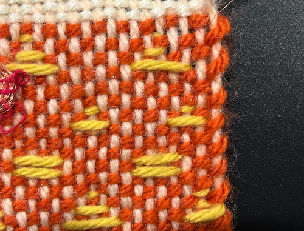
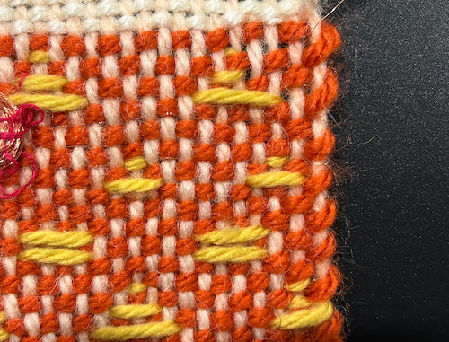
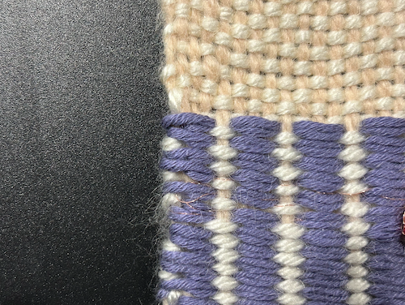
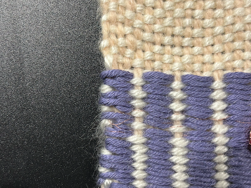

week four: one-bit flipping bead
This assignment was completed on October 1, 2023
My goal for this weekly assignment was to experiment with inlay and overshot weaving techniques, as well as different types of ways to implement the metal coils into the swatch. The materials I used in order to complete this assignment were my cricket loom, four different yarns, and metal thread.
inlay
The first technique that I tried on my first swatch was inlay. I wasn't 100% sure how to use inlay in my weaving, but I knew it had to do with supplemental wefts after your base weft, so I decided to try and do my own version of a triangle pattern. I thought it looked cool, but I wasn't super happy with it and I am pretty sure I did inlay wrong. Overall, I am happy with it for the most part, and plan to do more research so I can understand and use inlay better.
 

overshot
The second technique that I tried on my second swatch was weaving with overshot. I was really happy with how overshot looked. I decided to do two rows of purple yarn following one pattern, and then broke it up with a white yarn following the reverse pattern. I think that this looked really cool, and overshot is definitely a type of weaving that I would like to use in the future to add visual interest into more of my projects.
 

implementing coils
In order to implement my coils, I used two different techniques. On my inlay swatch, I wanted to try adding the coil last, and I used a tapestry needle to try and add it to my swatch. I hated this, and decided that when I did my overlay swatch, I wanted to try and add the coil as I wove. I preferred this method a lot better, and I thought that it ended up looking neater too.
final reflection
Overall, I was decently happy with what I produced. I was really excited and happy with the overshot weaving technique I used, and I would love to experiment with it more, adding more variation into the patterns and really see what it can do. With inlay, I would really like to research it more and learn how to do it better.
Next time I use an electromagnet, I would like to fasten it down to my swatch better so it doesn't float as much or run the risk of getting unraveled.